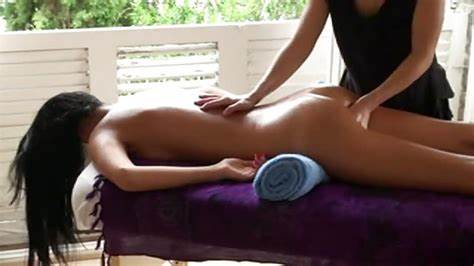
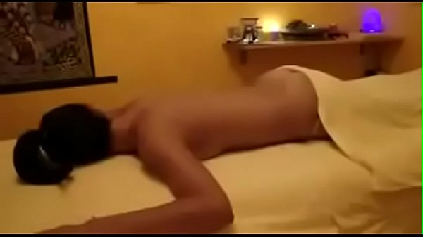
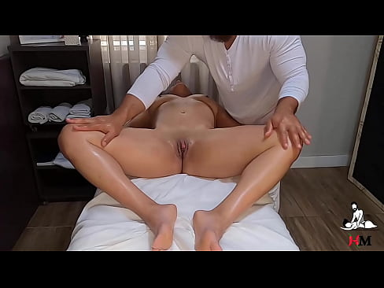
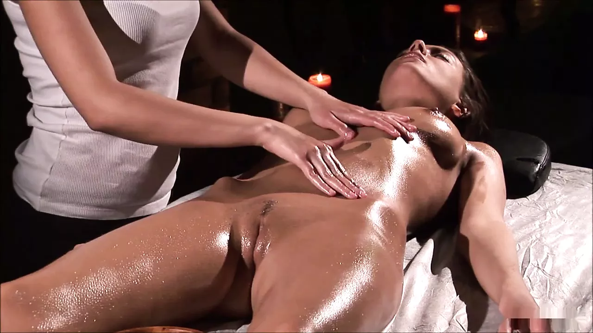
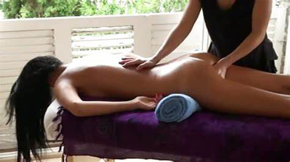
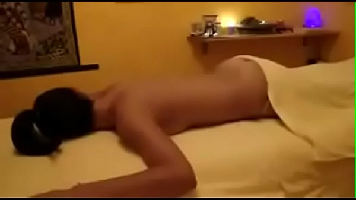
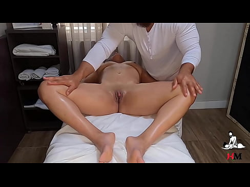
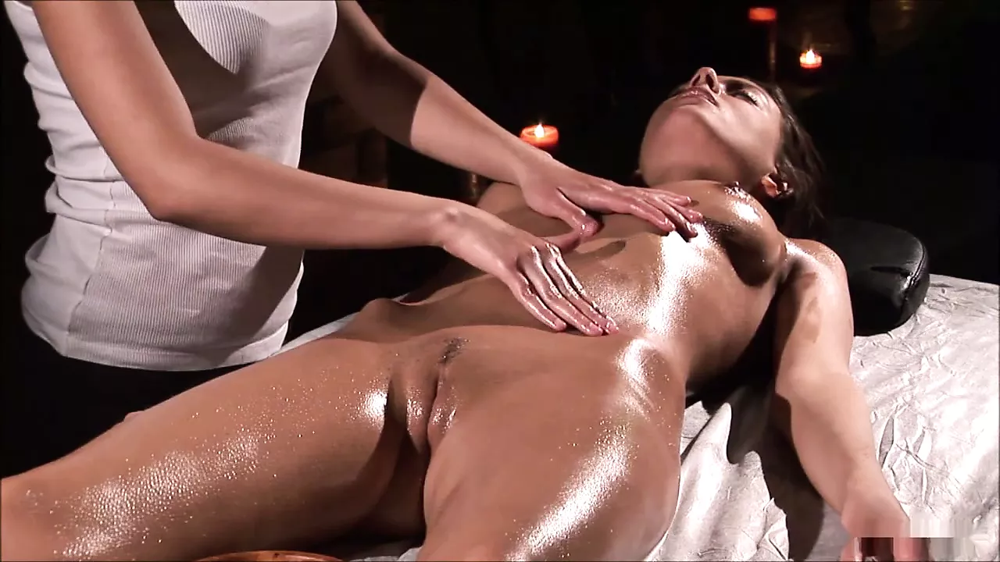

💖 Massagem Tântrica: O Despertar do Êxtase e a Cura Profunda
Você sente que há uma **energia adormecida** dentro de você? Talvez um **desejo reprimido**, uma **sensibilidade que foi silenciada**, ou até mesmo **bloqueios** que te impedem de sentir o **prazer em sua totalidade**. Muitas mulheres e homens carregam, por vezes, cicatrizes invisíveis de **traumas passados**, **experiências dolorosas (incluindo abusos)**, ou lutam contra **disfunções sexuais** como a **vaginismo, anorgasmia, ejaculação precoce ou baixa libido**. Isso pode gerar um vazio, uma desconexão com o próprio corpo e uma insatisfação com a vida íntima.
Eu entendo a profundidade de suas questões. E quero que saiba: **existe um caminho para a sua libertação e para a plenitude do seu prazer.** A **Massagem Tântrica** não é apenas um toque, é uma **jornada de redenção e êxtase**. É uma técnica milenar que, através de toques **extremamente conscientes, suaves e profundos**, atua diretamente no **despertar da sua energia vital (Kundalini)**. Essa energia, uma vez liberada, promove uma **poderosa cura emocional**, desfazendo nós, traumas e medos que aprisionam sua sexualidade e sua alegria de viver.
Permita-se sentir. Permita-se ser. A massagem tântrica é o convite para você **reconectar-se com a sua essência mais pura**, expandir sua percepção de prazer e alcançar **orgasmos que transbordam o corpo**, tocando a alma. É um processo de **liberação e autoconhecimento** que reflete em todas as áreas da sua vida, trazendo mais **confiança, autoestima e vitalidade**.
Benefícios da Massagem Tântrica que Transformarão Sua Vida:
- **Reconexão Íntima:** Desperta a sensibilidade e o prazer em todo o corpo, reativando zonas erógenas e levando a sensações intensas e múltiplas.
- **Cura e Libertação:** Auxilia na dissolução de traumas e bloqueios emocionais, inclusive de experiências passadas (como abusos), promovendo um processo de profunda cura.
- **Orgasmos Expandidos:** Possibilita a vivência de orgasmos mais intensos, prolongados e energéticos, transcendendo o orgasmo genital.
- **Aumento da Libido e Vitalidade:** A energia sexual é reativada e distribuída, aumentando a disposição, o bem-estar e o desejo.
- **Autoestima e Empoderamento:** Reconecte-se com seu corpo de forma positiva, fortalecendo sua confiança e sua capacidade de amar e ser amado(a).
- **Harmonia Corporal e Mental:** Alivia o estresse, a ansiedade e as tensões, proporcionando um estado de profundo relaxamento e clareza.
- **Superação de Disfunções:** Suporte no tratamento de vaginismo, anorgasmia, ejaculação precoce e outros desafios sexuais, com abordagem profissional e respeitosa.
Em Florianópolis, eu, Devi Karan, ofereço um espaço de **total sigilo, profissionalismo e acolhimento** para que sua jornada seja segura e verdadeiramente transformadora.
sensualidade pura: Massagem Erótica para Desvendar Seu Prazer
Você busca uma experiência de **prazer intenso, puro deleite e total entrega aos seus sentidos?** A **Massagem Erótica** é a arte de tocar o corpo com foco total na **sensualidade, excitação e gozo**. É uma celebração do prazer físico, desenhada para explorar as profundezas dos seus desejos em um ambiente seguro e profissional.
Aqui, o foco é você e a sua capacidade de sentir. Através de toques precisos, ritmados e envolventes sobre as **zonas erógenas**, a massagem erótica te convida a um estado de **relaxamento profundo e excitação crescente**. É uma oportunidade para liberar tensões sexuais, desinibindo seu corpo e sua mente para uma experiência de **prazer sem limites ou julgamentos**.
Experimente o Êxtase com a Massagem Erótica:
- **Prazer Físico Maximizado:** Toques direcionados para aguçar cada centímetro da sua pele, levando a sensações de profundo deleite.
- **Liberação de Tensão Sexual:** Alivia o estresse e a ansiedade, permitindo que você se entregue completamente ao momento.
- **Despertar da Sensualidade:** Conecte-se com sua libido e seu poder de sedução, redescobrindo sua sexualidade.
- **Experiência Personalizada e Segura:** Cada sessão é conduzida com absoluto respeito aos seus limites e desejos, garantindo sua segurança e conforto.
- **Relaxamento e Bem-Estar:** Além do prazer, proporciona uma sensação de leveza e tranquilidade após a liberação de energias.
Seja para explorar fantasias, liberar o estresse do dia a dia ou simplesmente desfrutar de um momento de pura sensualidade e gozo, a massagem erótica é uma escolha fascinante. Permita-se essa experiência única em **Florianópolis**, onde sua discrição e prazer são a nossa prioridade.
Sua Experiência Inesquecível: Como Preparamos a Sua Sessão
Independente da sua escolha — a cura profunda da massagem tântrica ou o prazer sensorial da massagem erótica — sua experiência será pautada por **respeito, profissionalismo e um ambiente de total acolhimento**. Cada sessão é um ritual, pensado para você se sentir à vontade e seguro(a).
1. Acolhimento e Conexão Inicial:
- Você será recebido(a) em um ambiente cuidadosamente preparado: com **iluminação suave, aromas convidativos e música relaxante**, tudo para estimular seus sentidos e acalmar sua mente.
- Iniciaremos com uma **conversa confidencial e sem julgamentos**. Este é o seu espaço para compartilhar suas expectativas, dúvidas e, principalmente, estabelecer seus limites. Sua **segurança e conforto** são a nossa prioridade absoluta.
2. O Toque Que Transforma e Excita:
- Para a **Massagem Tântrica**, o toque é um portal para a **cura e o autoconhecimento**. Movimentos **suaves, conscientes e rítmicos** percorrem o corpo, ativando pontos de energia e liberando tensões profundas, permitindo que a energia vital flua e te leve ao **êxtase energético**.
- Na **Massagem Erótica**, o toque é uma celebração da **sensualidade e do prazer**. Com técnicas focadas em despertar a excitação e intensificar as sensações nas zonas erógenas, proporcionamos um **gozo físico** que liberta e deleita.
- Utilizamos **óleos naturais** de alta qualidade, que não apenas nutrem a pele, mas também intensificam a experiência sensorial.
3. O Clímax da Entrega e o Prazer Expandido:
- Seja através da ativação da energia Kundalini na tântrica, que pode culminar em **orgasmos múltiplos e que transcendem o físico**, ou da culminação do prazer sensorial na erótica, nosso objetivo é que você **sinta seu corpo de uma forma jamais experimentada**.
- A **respiração consciente** será sua aliada, ampliando as sensações e permitindo uma entrega total ao momento presente.
4. Finalização e Integração:
- Após a massagem, você terá um tempo para desfrutar da plenitude das sensações, integrando a experiência em seu corpo e mente.
- Estarei disponível para conversar sobre suas percepções, em um ambiente de total confidencialidade.
Minha missão é que você saia dessa experiência **renovado(a), mais conectado(a) ao seu prazer e com uma sensação de liberdade e empoderamento**. Permita-se essa jornada extraordinária em Florianópolis.
✨ Quem Já Sentiu: Histórias de Êxtase, Cura e Redescoberta
As experiências são tão únicas quanto cada pessoa. Leia o que alguns de nossos clientes compartilharam sobre suas jornadas de prazer e transformação:
"Uma Libertação Emocional e um Prazer Inesperado!"
"Eu carregava um peso enorme de traumas passados, que me impediam de viver minha sexualidade. A massagem tântrica com Devi não foi só uma massagem, foi um portal para a **cura**. Com muita paciência e um toque de alma, ele me ajudou a liberar o que estava preso e a redescobrir um **prazer profundo e orgasmos** que eu nem sabia que existiam. Minha vida mudou!" - **Ana P., 38 anos**
"O Gozo em Sua Forma Mais Pura"
"A massagem erótica foi uma experiência de **prazer puro e intenso**. O profissionalismo e a atenção aos detalhes me fizeram sentir totalmente à vontade para explorar minha sensualidade. É um momento de **pura entrega e deleite**, que me deixou renovado e com a energia lá em cima. Recomendo para quem busca o máximo do prazer!" - **Lucas M., 45 anos**
"Reconectada com Minha Essência Sexual"
"Após o parto, senti meu corpo diferente, e minha libido diminuiu muito. A massagem tântrica me ajudou a **reassociar prazer e corpo**, a me sentir bonita e desejável novamente. Os orgasmos energéticos foram uma revelação. É um carinho para a alma e para o corpo!" - **Fernanda C., 31 anos**
"O Fim da Ansiedade e o Início do Prazer Verdadeiro"
"Lutava contra a ejaculação precoce e a ansiedade de desempenho. A massagem tântrica me ensinou a sentir, a prolongar o prazer e a me conectar mais profundamente com meu corpo. Hoje, vivo uma sexualidade muito mais **consciente e prazerosa**. Agradeço demais ao Devi!" - **Gustavo L., 50 anos**
Sua história de transformação e prazer pode começar hoje. Entre em contato para uma conversa confidencial e sem compromisso. Eu, Devi Karan, estou aqui para te guiar.
Sua Jornada de Êxtase e Cura Começa Agora!
Não espere mais para viver a plenitude do seu prazer e bem-estar. Agende sua sessão **exclusiva e confidencial** em **Florianópolis / SC**.
Agende Pelo WhatsApp Agora!Atendimento discreto e profissional no coração de Florianópolis/SC. Sua privacidade é nossa prioridade.